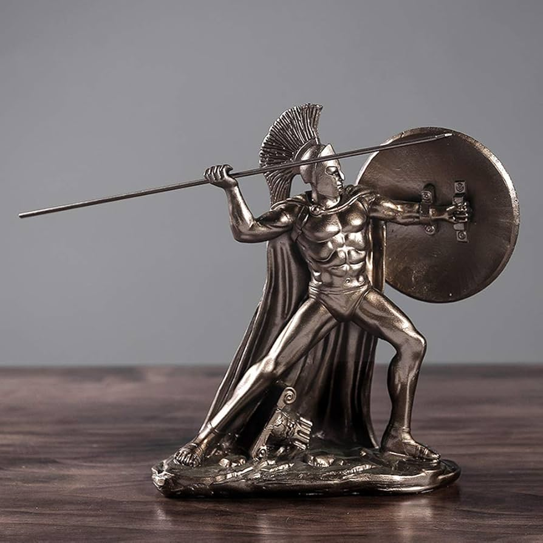

Atardecer en la montaña
Óleo sobre lienzo que muestra un paisaje montañoso al atardecer, con colores cálidos y contrastes de luz.

Categoría: Pintura
Ver en la galeríaEmail: ssanitax@gmail.com
Óleo sobre lienzo que muestra un paisaje montañoso al atardecer, con colores cálidos y contrastes de luz.
Categoría: Pintura
Ver en la galeríaEscultura en bronce que representa a un guerrero en plena acción, con gran realismo en los detalles anatómicos.
Categoría: Escultura
Ver en la galeríaCuadro al óleo actualizado, con más detalles sobre la técnica y el autor.

Categoría: Pintura
Ver en la galeríaEscultura en bronce que representa a una figura humana en actitud reflexiva. Inspirada en el pensamiento contemporáneo y la introspección.

Categoría: Escultura
Ver en la galeríaÓleo sobre lienzo que representa un amanecer en un paisaje fluvial. Destaca por el uso de luces suaves y reflejos en el agua.

Categoría: Pintura
Ver en la galeríaEscultura abstracta en mármol que representa una figura femenina que emerge suavemente del agua, simbolizando la conexión entre la naturaleza y el ser humano.

Categoría: Escultura
Ver en la galería